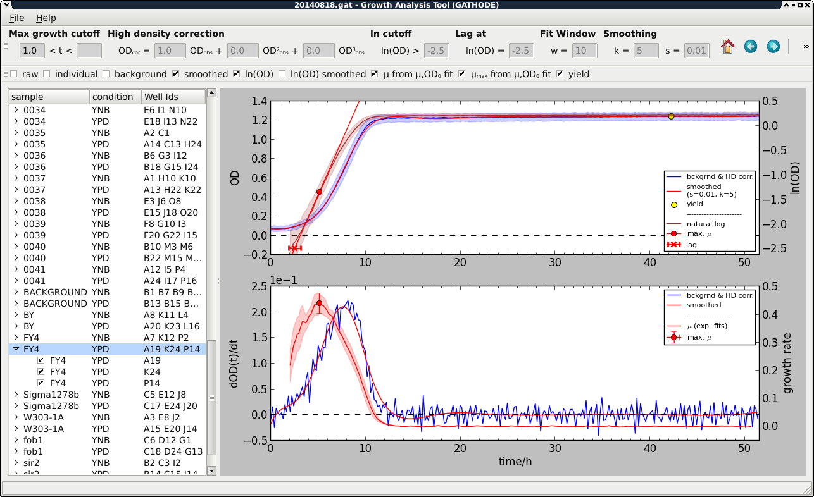

Growth Analysis Tool (GATHODE) and CLS Analysis Tool (CATHODE)¶
The Growth Analysis Tool for High-throughput Optical Density Experiments (GATHODE) is a software package for analysing time series of optical density measurements that were recorded with the help of a plate reader. It allows to extract growth parameters such as maximal growth rate, lag-time and growth yield.
The Chronological Life Span is defined as the time cells can survive in a non-dividing state. The Chronological life span Analysis Tool for High-throughput Optical Density Experiments (CATHODE) uses multiple output files of GATHODE to analyse this survival.
Both programs consist of the main analysis logic suitable for batch processing, and a graphical user interface (GUI) that allows for quick inspection of curves, adjustment of parameters and blacklisting of outliers. They allow to export the data as figures or tables for further processing and analysis.
{kind=link}

License and citation¶
Growth Analysis Tool for High-throughput Optical Density Experiments (GATHODE) and Chronological life span Analysis Tool for High-throughput Optical Density Experiments (CATHODE) are released under the terms of the GNU Affero General Public License.
If you use (parts of) this software in your research, we kindly ask you to cite our publication Jung P. P., Christian N., Kay D., Skupin A. and Linster C.L. 2015. Protocols and programs for high-throughput growth and aging phenotyping in yeast. Accepted, doi:10.1371/journal.pone.0119807
Documentation¶
To get started with GATHODE read getting started of the documentation.
CATHODE is documented here.
Download¶
The latest versions of GATHODE and CATHODE for Mac OS/X and Windows will soon be made available for download.
To install the software from source check the installation instructions. The source code is hosted at https://github.com/platereader/gathode.
Developing¶
If you would like to extend the software or use it in your custom workflow, read the developer documentation.